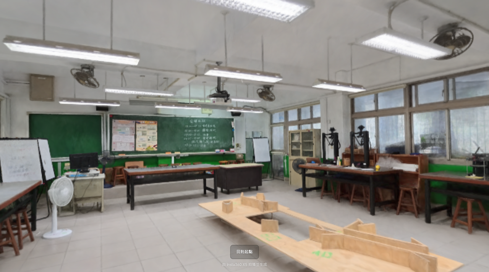
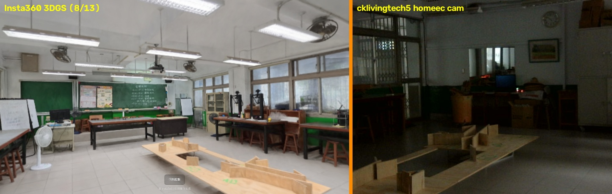
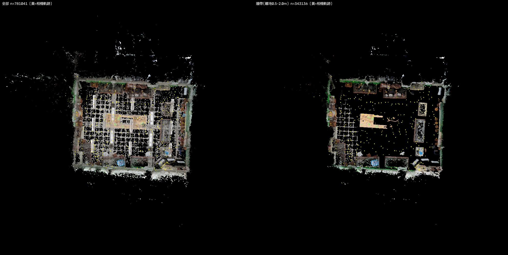
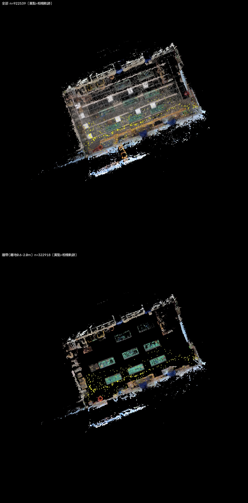
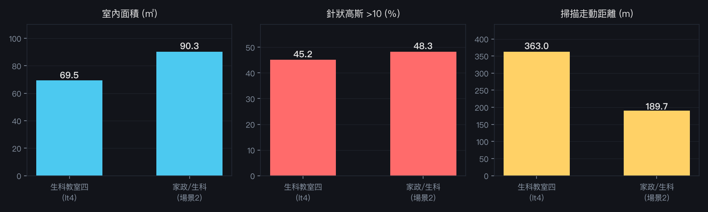

Insta360 X5 生成的兩間教室 3DGS
用同一套流程量化分析
兩份掃描皆由 Insta360 X5 拍攝並在其雲端生成（SOG v2 / splat-transform v3.1.3 / 各 100 萬顆高斯）。
本頁用同一套自製流程分析：資產擷取 → 轉 PLY → 相機軌跡約束的 Manhattan 房間擬合 → 高斯品質指標。
一、兩個場景


cklivingtech5 攝影機同日畫面。地上同一組木製坡道模型、綠色牆裙、櫃體位置一致 → 兩者是同一間教室。二、房間幾何（相機軌跡約束的 Manhattan 擬合）


| 項目 | 生科教室四（lt4） | 家政／生科（場景 2） |
|---|---|---|
| 室內尺寸 | 5.76 × 12.07 m | 8.57 × 10.54 m |
| 長寬比 | 0.477（細長） | 0.814（近正方） |
| 面積 | 69.5 ㎡ | 90.3 ㎡ |
| Manhattan 旋轉 | 20.75° | 86.50° |
| 重力對齊檢核 | 傾斜 0.4° | 傾斜 0.1° |
三、掃描與重建品質

| 指標 | lt4 | 場景 2 | 意義 |
|---|---|---|---|
| 相機數（拍攝點） | 1,914（478） | 1,880（468） | 每點切 center/up/down/left/right |
| 走動距離 | 363 m | 190 m | 場景 2 覆蓋只有一半 |
| 拍攝點間距（中位） | 80 cm | 82 cm | 兩者一致 |
| 不透明度 >0.5 比例 | 75.7% | 53.0% | 場景 2 半透明高斯明顯較多 |
| 高斯尺度（中位） | 0.0075 m | 0.0091 m | — |
| 針狀高斯 >10 | 45.2% | 48.3% | 兩者都嚴重 |
| 異性 p95 | 170 | 209 | — |
共同問題：針狀高斯。兩份官方輸出都有 45–48% 的高斯長短軸比超過 10。
這正是既有 de-needle 工具在事後處理的東西——也是分支 B（重訓 + 正則化）想從訓練階段解決的目標。
誠實標註：淨高數字不可靠。兩種量法給出不同結果——百分位法得 lt4 2.73 m／場景 2 4.28 m，
密度雙峰法得 2.37 m／2.04 m。4.28 m 對單層教室明顯過高，2.04 m 又過低。
兩場景的重力對齊都已驗證（傾斜 <0.5°），所以問題出在離群高斯與「哪個密度峰才是天花板」的判定，不是座標系。
本頁因此不報單一淨高值；房間的水平尺寸則有相機軌跡約束，可信度較高。
四、一個有戰略意義的發現
場景 2 是人流定位管線更好的落地對象。
兩間教室都同時擁有 3DGS 掃描與固定攝影機，但鏡頭型式差很多：
四台攝影機實測已證明：透視鏡頭的 YOLO26-depth 動態範圍是環景條的 5 倍。
而 lt4 目前最大的殘留限制正是「徑向鑑別度全來自方位角、深度模型沒有貢獻」
（見 閉合對位 v2）。場景 2 同時具備乾淨的 3DGS 幾何與可用的透視深度，
理論上可以直接做到 lt4 做不到的逐人徑向測距。
兩間教室都同時擁有 3DGS 掃描與固定攝影機，但鏡頭型式差很多：
| 教室 | 攝影機 | 鏡頭 | 深度動態範圍 |
|---|---|---|---|
| lt4 | cam5 @ cklivingtech2 | 1920×248 環景條 | 0.155 |
| 場景 2 | homeec @ cklivingtech5 | 640×480 透視 | 0.750 |
五、方法與可重複性
- 資產擷取：
insta_fetch.py— 用 CDP 攔截 3D 空間載入的簽章網址，下載1_3DGS.sog與2_cameras.json，並自動關閉教學遮罩後截圖。 - 轉檔：
npx @playcanvas/splat-transform（與 Insta360 生成端同一工具，不需自行逆推格式）。 - 分析：
analyze_scene.py— 房間擬合以相機軌跡為約束（牆必在走過範圍外但 <2.5 m），避開純百分位法被離群高斯拉歪、純密度峰法抓到牆外走廊的兩種失敗。
資產與分析：
相關：閉合對位 v2 · 四台攝影機 × YOLO26-depth · 人流定位 v1
assets/insta360_lt4/、assets/insta360_scene2/（各含 sog、cameras.json、analysis.json）；
236 MB 的 PLY 僅本機歸檔於 /Volumes/3D/x5-3dgs/，可由 sog 重生。相關：閉合對位 v2 · 四台攝影機 × YOLO26-depth · 人流定位 v1